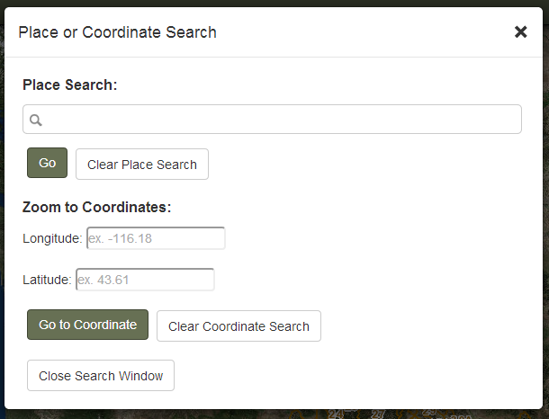
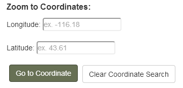

PLACE OR COORDINATE SEARCH

Place Search:
To search for a place, just start typing in the search box. A list of possible places will be listed use your mouse, up/down arrow keys, or tap with your finger to select a choice.

A blue icon will be placed at the resulting place. To remove the icon, open the 'Place or Coordinate Search' window and click the 'Clear Place Search' button.
Coordinate Search:
Currently, you can only enter decimal degree coordinates. If you have coordinates in a different system, there are many online coordinate converters such as http://boulter.com/gps/.
Simply enter the coordinate you would like to locate and zoom to in the longitude and latitude input boxes and click the 'Go to Coordinate' button or hit the enter key.

A black icon with the coordinate labeled will be placed at the resulting coordinate location. To remove the icon, open the 'Place or Coordinate Search' window and click the 'Clear Coordinate Search' button.
Created with the Personal Edition of HelpNDoc: Easily create EBooks